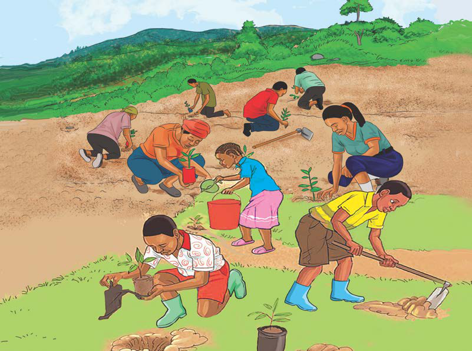

pamoja na wananchi. Pia, inaelezea wajibu wa kuheshimu mali ya mtu mwingine. Watu wote wanatakiwa kupiga vita uharibifu na ubadhirifu wa mali za umma na za jamii na kuendesha uchumi wa Taifa kwa umakini kwa ajili ya kizazi cha sasa na kijacho. Hivyo, mtoto ana wajibu wa kutunza na kulinda maliasili za Taifa, mali za umma na za jamii na kutokushiriki vitendo vya uharibifu wake. Pia, mtoto ana wajibu wa kushiriki katika kutoa elimu na kuandaa kampeni za kutunza mali za umma katika jamii. Mfano, mtoto anaweza kufanya kampeni kwa kushiriki shughuli za kutunza mazingira katika jamii. Kielelezo namba 5, kinawasilisha watoto wakishiriki kazi za kupanda miti.
Kazi ya kufanya namba 10

Andaa klabu ya utunzaji na ulinzi wa mali zilizopo katika jamii kwa kuonesha mikakati na utekelezaji wake.
